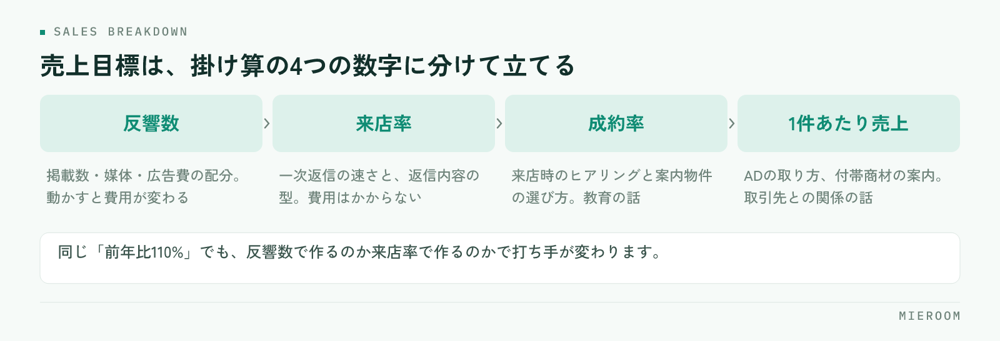

年明けからの繁忙期に向けて、そろそろ売上目標を決める時期です。ただ、「前年比110%」とだけ決めた目標は、現場では動きに変わりません。目標が効くのは、担当者が明日やることに翻訳できたときだけです。
この記事の結論
繁忙期の売上目標は、全店の金額を決めてから配るのではなく、前年実績を工程の数字まで分解してから積み上げると現場が動けます。反響数・来店率・成約率・1件あたり売上の4つに分け、店舗別・担当別に落とし、週単位で追える形にします。
「前年比110%」だけでは、現場が動けない
金額だけの目標には、二つの問題があります。ひとつは、達成するために何をすればいいのかが分からないこと。もうひとつは、届かなかったときに原因を特定できないことです。
月末に「あと200万円足りない」と分かっても、反響が少なかったのか、来店までつながらなかったのか、成約率が落ちたのかが分からなければ、翌月も同じ結果になります。
目標は、現場の行動に言い換えられる単位まで下ろして初めて機能します。「今週は反響への一次返信を全件その日のうちに返す」まで具体化されていれば、担当者は動けます。金額はその結果として出てくるものです。
目標を作る前に、前年実績を同じ物差しで並べる
立て方の出発点は、前年の実績です。ただし、そのまま眺めても使えません。次の条件をそろえてから並べます。
- 売上の定義をそろえる：契約日で計上するのか、入金日で計上するのか。後ADを含めるのかどうか
- 確定と見込みを分ける：入金済みの確定売上と、まだ入っていない見込みを混ぜない
- 月をまたぐ案件を整理する：1月申込・2月契約・4月後AD入金のような案件がどう計上されているか
- 店舗と担当をそろえる：異動があった担当者の実績をどちらに寄せるか決めておく
ここが揃っていないと、店舗ごとの比較が成立しません。前年の集計に時間がかかっている場合は、月末の売上集計を自動化するで、入力の設計から見直すことをおすすめします。
売上目標は、4つの数字に分解する
賃貸仲介の売上は、次の掛け算で成り立っています。

反響数 × 来店率 × 成約率 × 1件あたり売上 = 売上
前年の実績をこの4つに分けると、どこを伸ばすかの議論ができるようになります。たとえば同じ「前年比110%」でも、反響数を増やして達成するのか、来店率を上げて達成するのかでは、打ち手がまったく違います。
- 反響数を増やす：掲載数・掲載媒体・広告費の配分を見直す。費用が動く
- 来店率を上げる：一次返信の速さ、返信内容の型を整える。費用はかからない
- 成約率を上げる：来店時のヒアリング、案内物件の選び方。教育の話になる
- 1件あたり売上を上げる：ADの取り方、付帯商材の案内。取引先との関係の話になる
費用をかけずに動かせるのは、真ん中の2つです。まずここを見てから、広告の増額を検討してください。
店舗別に配るときは、条件の差を先に見る
複数店舗を持っている場合、全店の目標を店舗数で割るのは避けてください。店舗によって前提が違います。
| 見るべき条件 | 高い店舗 | 低い店舗 |
|---|---|---|
| 商圏の反響量 | 反響数の目標を厚く持てる | 来店率・成約率で作る |
| 担当者の人数と経験 | 接客数を増やせる | 1人あたりの負荷を上げすぎない |
| 管理物件・専任物件の量 | 1件あたり売上を見込める | 客付け中心の構成になる |
条件をそろえて並べると、「反響は来ているのに来店につながっていない店舗」「反響が少ないぶん成約率で持っている店舗」のように、店舗ごとの課題が見えてきます。目標はその課題に対して立てます。
担当別に落とすときの考え方
担当別まで落とすとき、契約本数だけを配るとうまくいきません。経験の浅い担当者にとって、契約本数は自分でコントロールしにくい数字だからです。
工程の数字を混ぜて配ってください。
- 接客数：本人の行動で動かせる。新人にはここを厚く置く
- 来店率：反響への返信の速さと内容で変わる。チームで共通の目標にしやすい
- 成約率：経験が出る数字。単独で評価せず、接客数とセットで見る
- 契約本数・売上：結果の数字。ベテランにはここまで持ってもらう
配り方の詳細は、担当者の成績管理で工程ごとの見方を整理しています。
月ではなく、週で追える形にする
繁忙期は3か月で終わります。月末に集計して振り返ると、修正できるのは実質1回だけです。週単位で進捗が見える形にしておいてください。
決めるのは3つです。
- いつ見るか：週の頭に前週分を確認する、と曜日を固定する
- 何を見るか：反響数・来店数・申込数・確定売上。4つで足ります
- 誰が入力するか：担当者が接客の直後に入れる。店長がまとめて入力する形にしない
週次で見る仕組みは、入力が溜まった瞬間に止まります。繁忙期に入る前に「反響が来たらその場で1行」「申込が入ったらその日のうちに」と決めて、12月のうちに練習しておいてください。
よくある失敗と、その直し方
好調な月に目標を上げ、届かない月はそのままにすると、数字への信頼がなくなります。修正するなら上下どちらも、理由とセットで。
そのほか、次の3つもよく起こります。
- 達成しても評価が変わらない：目標と評価がつながっていないと、翌年から本気で取り組まれなくなります
- 見込みを売上に混ぜる：入金前の案件を足して達成した気になり、月末に崩れます
- 前年データが人によって違う：集計する人ごとに数字が変わる状態では、目標の議論が成立しません
開業したばかりで、前年の実績がありません
目標は店長が決めるべきですか、担当者と決めるべきですか
Excelで管理していますが、分解までできますか
まとめ：目標は、金額ではなく工程で配る
繁忙期の売上目標の立て方は、前年実績を同じ定義でそろえ、反響数・来店率・成約率・1件あたり売上の4つに分解し、店舗の条件差を見て配り、担当別には工程の数字を混ぜて落とす。そして週単位で追う。この順番です。金額から始めると、現場が動ける形になりません。
分解して追う形を作るときに壁になるのは、目標の決め方より、数字が毎週そろうかどうかです。入力が溜まらず、店舗別・担当別に自動で分かれて出てくる状態になっていれば、目標は繁忙期のあいだ生きた数字として使えます。当社のミエルームは、反響から申込・入金までを1件1行で記録し、確定売上と見込みを分けたまま店舗別・担当別に集計する形で作っています。繁忙期の前に体制を整えたい場合は、デモアカウントの発行からご相談ください。